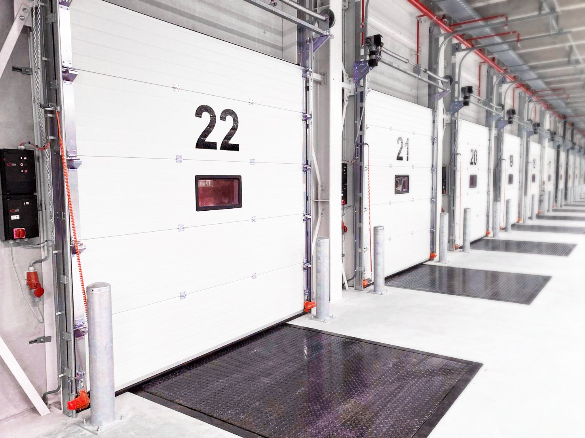
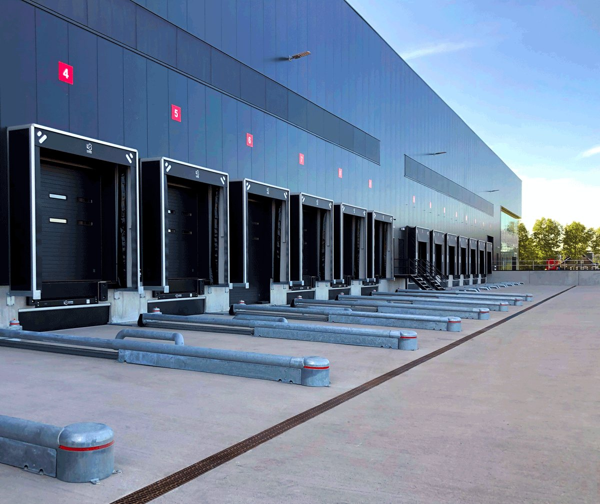
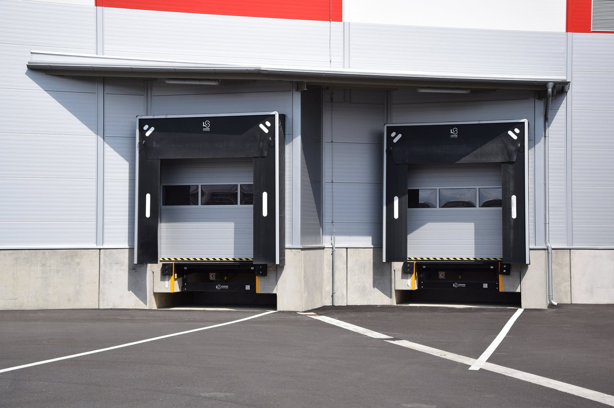
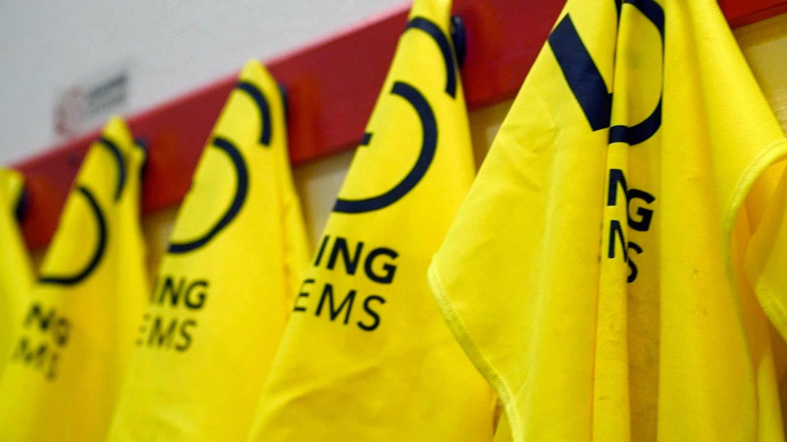
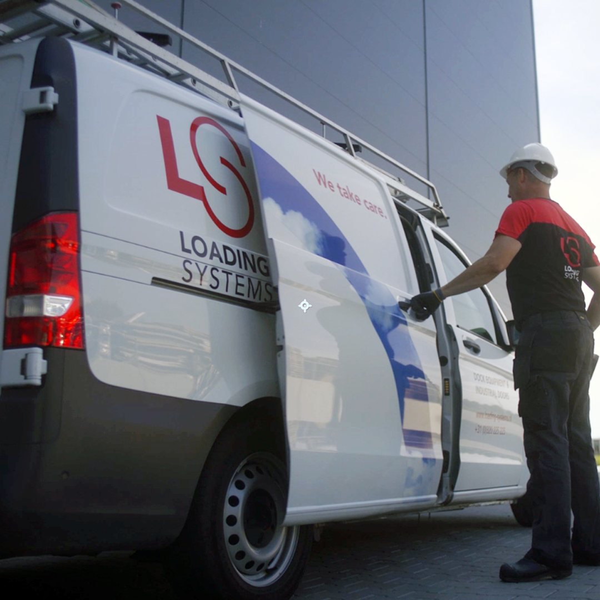

Ihre Verladestelle, komplett geplant in 3D.
Tor, Überladebrücke, Torabdichtung, Puffer und Wegfahrsicherung in einer Verladehalle zusammenstellen, den Lkw andocken lassen und sehen, wie alles ineinandergreift. Sektionaltore mit Listenpreis 2026.
Alles aus einer Hand für die Verladestelle
Tore, Überladebrücken, Torabdichtungen, Wegfahrsicherungen und Steuerungen sind aufeinander abgestimmt und über eine Kombisteuerung in logischer Reihenfolge verriegelt.

Industrietore
Sektionaltor 601, Schnelllauf-Sektionaltor 620NG, Schnelllauftore 640PR, Brandschutztore, Streifenvorhänge.
Mehr erfahren ›
Überladebrücken
Klappkeil 232NG, Vorschubkeil 233NG, Stepped Dock, Combidock 253NG, Van-Dock, manuell 105NG. Heavy Duty bis 180 kN.
Mehr erfahren ›
Torabdichtungen
Planen 403M, Kissen 400NG, Schaum 405, aufblasbar 407NG mit adaptivem Gebläse, Van-Abdichtung 421NG.
Mehr erfahren ›
Sicherheit und Zubehör
Wegfahrsicherungen 503NG und 505NG, LED Dock-Licht, Hurricane Light, Ampeln, Puffer, Radführungen, Poller.
Mehr erfahren ›Andocken, Tor öffnen, Rampe auffahren. In 3D.
Der Konfigurator baut Ihre Verladehalle mit bis zu sechs Docks. Wählen Sie Tor, Maße, Paneel, Verglasung, Schlupftür, Überladebrücke, Torabdichtung, Puffer, Wegfahrsicherung und Licht. Dann fährt der Lkw an, die Wegfahrsicherung greift, das Tor öffnet, die Abdichtung legt sich an und die Brücke fährt auf die Ladefläche.
- Sechs Tortypen, 14 RAL-Farben, Fenster, Full Vision, Schlupftür mit sechs Schlössern
- Sechs Überladebrücken, sieben Torabdichtungen, acht Puffertypen, zwei Wegfahrsicherungen
- Listenpreise für Sektionaltore und Nebentüren aus den Preislisten 2026, Innenansicht der Halle, Produkt-Studio
Produkte
Ein komplettes Programm an Industrietoren und Dockausrüstung.
ProdukteDock Studio
Verladehalle in 3D zusammenstellen und den Andockvorgang ansehen.
KonfigurierenSysteme und Service
24/7 Service, werksseitig ausgebildete Techniker, Wartungsverträge, 5 Jahre Garantie.
ServiceMedien und Länder
LinkedIn-Seiten und Websites von Loading Systems in sechs Regionen.
MedienWas die Produkte leisten.
Ein Partner für Tore und Rampen, rund um die Uhr.
Unsere Servicetechniker fahren mit Werkzeug und Ersatzteilen an Bord, damit ein Schaden direkt vor Ort behoben wird. Fahrzeug-Tracking und mobiler Datentransfer sorgen dafür, dass der Techniker vorbereitet bei Ihnen vorfährt. Wartungsverträge halten Ihre Tore und Verladetechnik verfügbar, für Produkte aller Hersteller.
Service und Wartung